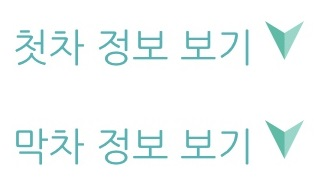
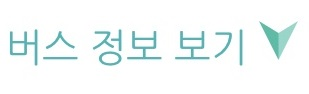
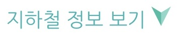

KWTP란?
KWTP는 Kwangwoon University Transfer Program, 광운대학교 환승프로그램의 약자입니다.
이 사이트는 광운대학교 앞의 2개의 정류장을 이용하는 사람들이
보다 편리한 길찾기를 할 수 있도록 돕기위해 제작되었습니다.
해당 사이트는 버스로 한 번에 갈 수 있는 지하철역 길찾기 정보만 제공하고 있습니다.
KWTP는 Kwangwoon University Transfer Program, 광운대학교 환승프로그램의 약자입니다.
이 사이트는 광운대학교 앞의 2개의 정류장을 이용하는 사람들이
보다 편리한 길찾기를 할 수 있도록 돕기위해 제작되었습니다.
해당 사이트는 버스로 한 번에 갈 수 있는 지하철역 길찾기 정보만 제공하고 있습니다.
원하는 지하철 역으로 가고 싶을 경우, 검색창에 원하는 검색어를 입력하세요.
검색한 지하철역으로 가는 버스 노선이 존재하면, 해당 노선을 볼 수 있습니다.
뒤로가기 버튼을 누르면 다시 홈 페이지로 이동합니다.

정류장별 첫차와 막차시간을 알려줍니다.
시간은 교통상황에 따라 변경될 수 있습니다.

261, 1017, 1137, 1140번 버스정보를 알 수 있습니다.
원하는 노선번호를 선택하면 해당 버스의 상세정보를 확인할 수 있습니다.
원하는 버스를 선택하세요!
중앙도서관 정류장과 동해문화예술관 정류장의 사진을 볼 수 있습니다.
원하는 정류장을 선택하세요!

학교 앞 버스 정류장에서 버스로 한 번에 갈 수 있는 지하철 노선입니다.
호선 별로 역이 여러 개일 경우, 버스 소요시간이 적은 순서대로 나타내었습니다.